01
永續報告書輔導／查證
讓永續成果，清楚被看見。
提供企業陪伴式永續報告書輔導，以及企業永續報告書 AA1000 查證，協助建立資料蒐集、編製與揭露流程。
討論報告書需求01 / 專業服務
核心產品與技術解決方案，連結永續管理與製造實務，依企業現況找到適合的合作起點。
02 / 實務作品
講師授課、企業內訓與查證師的實務足跡，記錄教學互動、團隊學習與專業交流。
點選照片可放大瀏覽，按 Esc 關閉。
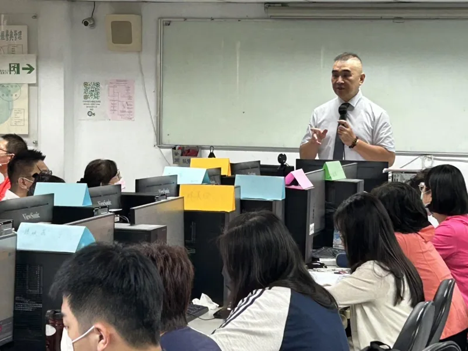
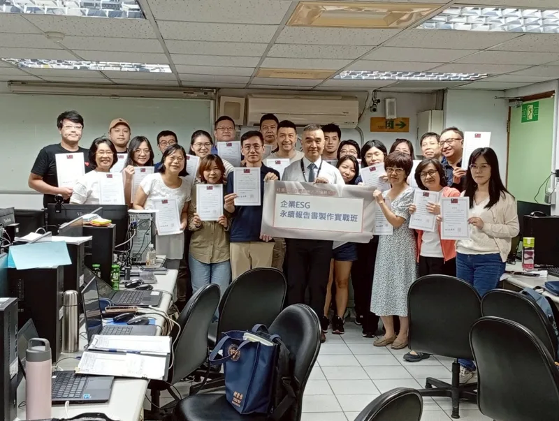
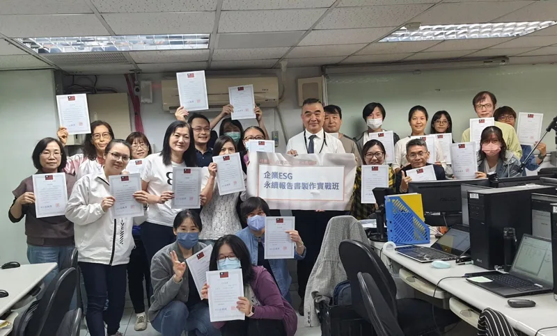
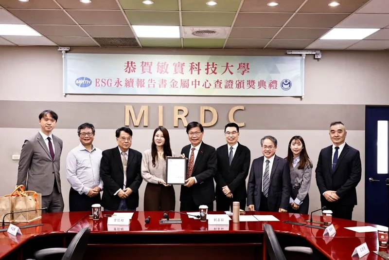
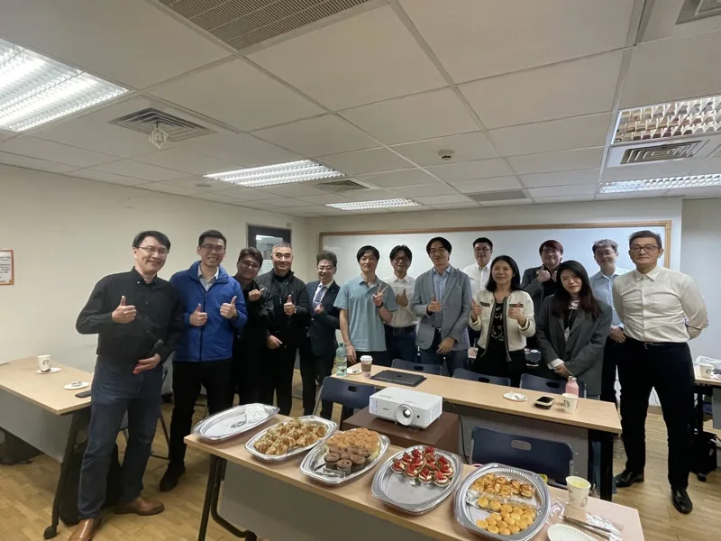
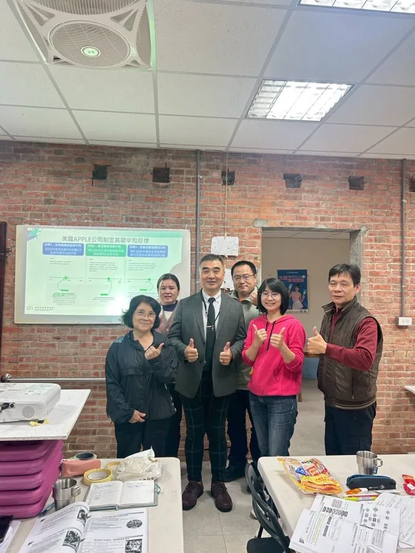
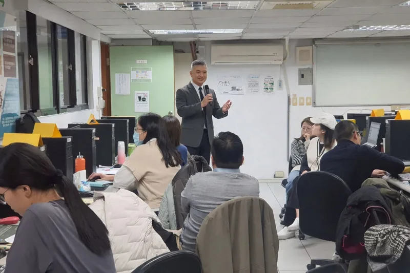
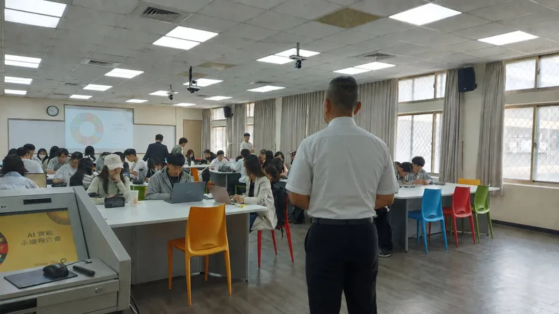
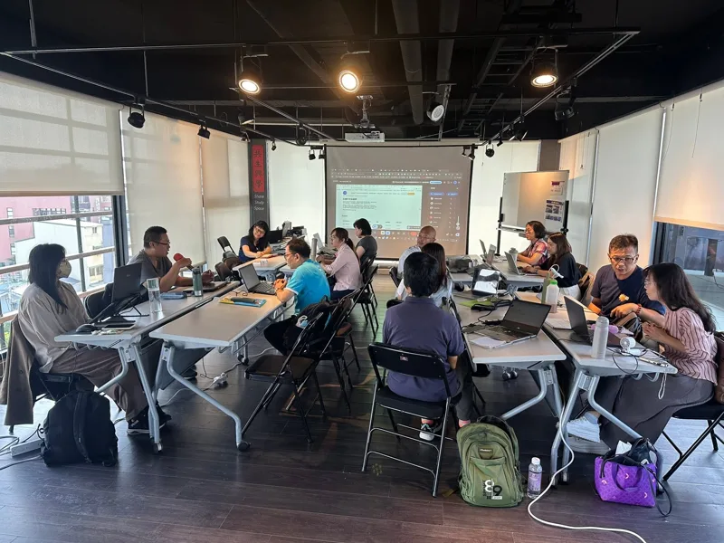
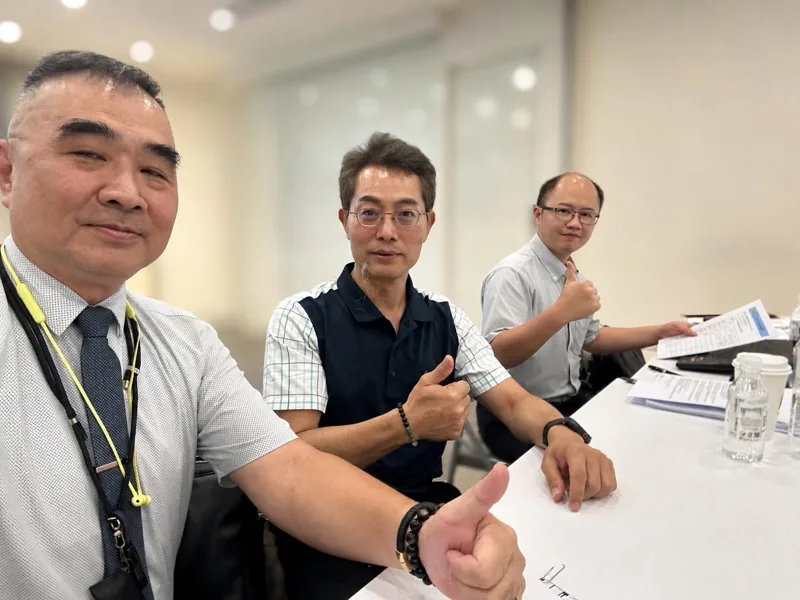
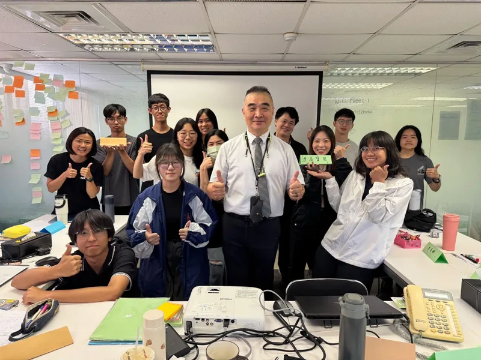
03 / 關於 WOODY
從精密製造到永續管理，我始終相信：好的協作，始於理解企業真正面臨的問題。
結合商務管理、製造開發、國際碳管理標準與 AI 工具，我協助團隊把複雜的規格與標準，轉化為能理解、能執行、能持續的工作方法。
認識我的專業背景從產品應用情境與組織目標出發，建立研發、採購與供應端的共同語言，兼顧品質、成本與交期。
透過實作演練與教練式輔導，引導同仁理解數據與管理邏輯，建立能自主延續的運作方式。
結合 AI 工具整理資料與知識，協助團隊減少重複作業，聚焦有價值的判斷與改善。
雙軌實務 / 一個整合視角
以不同領域的實務經驗，讓專業協作更貼近企業營運。
製造開發 · 業務副總經理
從需求釐清、規格討論到技術協作，協助評估塑膠產品開發與加工可行性，將設計構想轉為執行方案。
永續管理 · 副總經理／查證顧問
結合艾恩永續中心的永續輔導與教學經驗，從企業現況與客戶要求出發，建立推動淨零與永續管理的實務能力。
04 / 專業背景
跨領域的管理經歷、教學背景與國際標準專業，是持續陪伴企業前進的基礎。
Microsoft AI-900／AI-901、ITS AI／生成式 AI 認證、IPMA Level C 專案管理師。
中華三創菁英協會永續服務委員會副執行長、中華環境安全永續協會監事、中華碳管理顧問協會理事。
學歷背景中國醫藥大學 醫事技術系
05 / 聯絡我 CONTACT ME
有合作想法或實務問題？選擇您習慣的平台，與我聊聊。